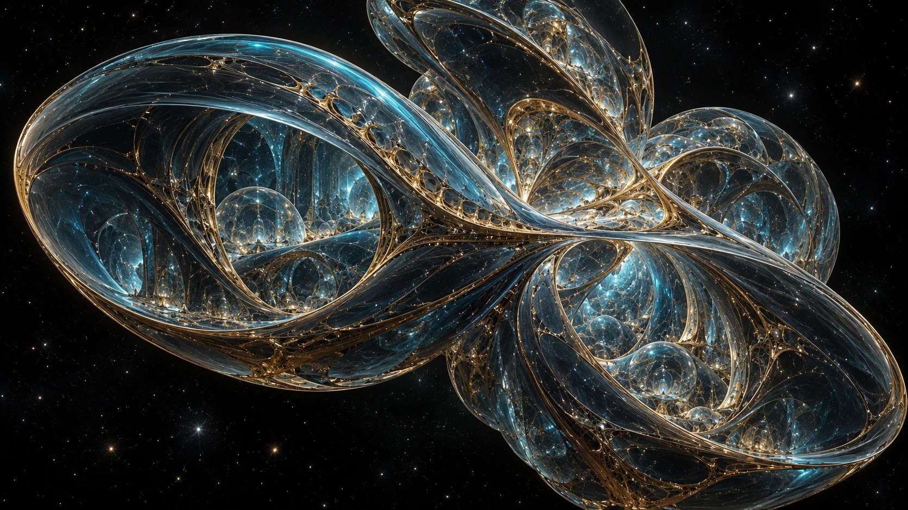
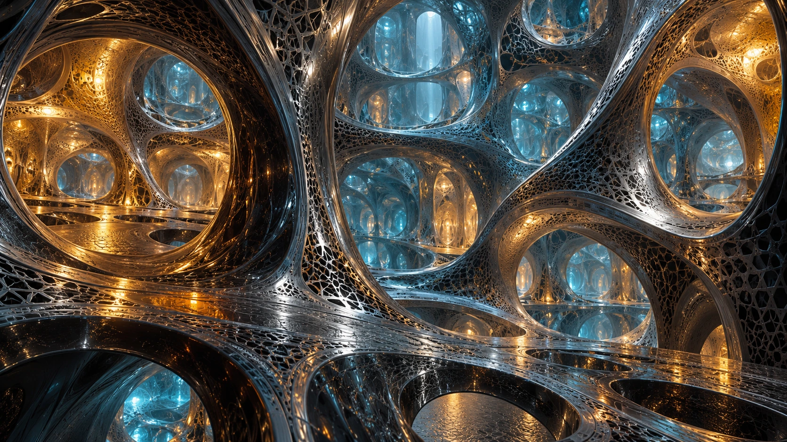

Calabi Bloom
Nested glass membranes and gilded ribs form a vast folded sculpture.
AI-generated on 4 October 2026. Inspired by the owner’s LumenCore geometry and research themes. Concept illustration; not a verified mathematical rendering, experimental result or functioning device. Source: 1672 × 941 pixels.
Save web image
Gyroid Sanctum
A continuous porous labyrinth opens into chambers within chambers.
AI-generated on 4 October 2026. Inspired by the owner’s LumenCore geometry and research themes. Concept illustration; not a verified mathematical rendering, experimental result or functioning device. Source: 1672 × 941 pixels.
Save web image
Hopf Atlas
Families of luminous circles span the horizon above a black ocean.
AI-generated on 4 October 2026. Inspired by the owner’s LumenCore geometry and research themes. Concept illustration; not a verified mathematical rendering, experimental result or functioning device. Source: 1672 × 941 pixels.
Save web image